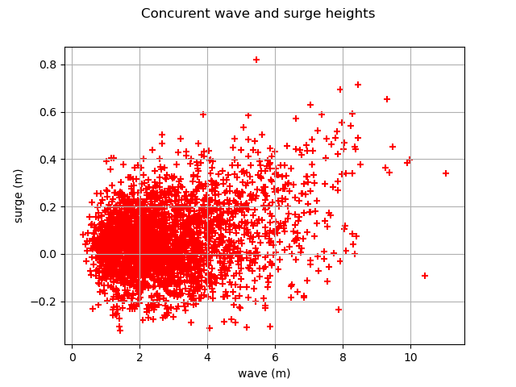
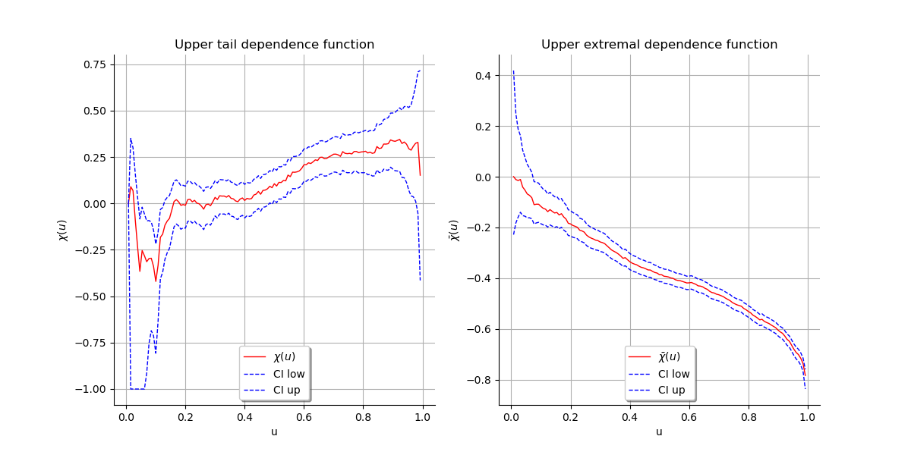

Note
Go to the end to download the full example code
Estimate tail dependence coefficients on the wavesurge data¶
In this example we are going to estimate the tail dependence of a bivariate sample with the Wave-surge dataset from [coles2001]
Load the Wave-surge dataset
import openturns as ot
import openturns.viewer as otv
from openturns.usecases import coles
data = coles.Coles().wavesurge
print(data[:5])
[ wave surge ]
0 : [ 1.5 -0.009 ]
1 : [ 1.83 -0.053 ]
2 : [ 2.44 -0.024 ]
3 : [ 1.68 0 ]
4 : [ 1.49 0.079 ]
Plot the cloud of the two components
graph = ot.VisualTest.DrawPairs(data)
view = otv.View(graph)

First plot upper tail dependence function
graph1 = ot.VisualTest.DrawUpperTailDependenceFunction(data)
graph2 = ot.VisualTest.DrawUpperExtremalDependenceFunction(data)
grid = ot.GridLayout(1, 2)
grid.setGraph(0, 0, graph1)
grid.setGraph(0, 1, graph2)
view = otv.View(grid)

otv.View.ShowAll()